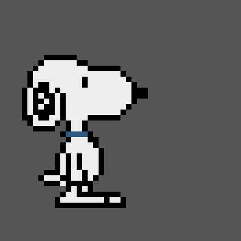

* {
margin: 0;
padding: 0;
box-sizing: border-box;
}
body {
font-family: 'Arial', sans-serif;
background-color: #f9e7f7; /* Soft pink background */
height: 100vh;
overflow: hidden;
display: flex;
justify-content: center;
align-items: center;
position: relative;
}
.container {
text-align: center;
z-index: 2;
position: relative;
}
h1 {
font-size: 4rem;
color: #ff6f61; /* Soft red color */
text-shadow: 2px 2px 5px rgba(0, 0, 0, 0.2);
}
.snoopy img {
width: 200px;
margin-top: 20px;
animation: float 3s ease-in-out infinite;
}
@keyframes float {
0%, 100% {
transform: translateY(0);
}
50% {
transform: translateY(-20px);
}
}
.hearts {
position: absolute;
top: 0;
left: 0;
width: 100%;
height: 100%;
overflow: hidden;
z-index: 1;
}
.heart {
position: absolute;
width: 20px;
height: 20px;
background-color: red;
transform: rotate(-45deg);
animation: fall linear infinite;
}
.heart::before,
.heart::after {
content: '';
position: absolute;
width: 20px;
height: 20px;
background-color: red;
border-radius: 50%;
}
.heart::before {
top: -10px;
left: 0;
}
.heart::after {
left: 10px;
top: 0;
}
@keyframes fall {
0% {
transform: translateY(-10%) translateX(0) rotate(-45deg);
opacity: 1;
}
100% {
transform: translateY(110vh) translateX(100vw) rotate(-45deg);
opacity: 0.5;
}
}
// Function to create floating hearts
function createHeart() {
const heart = document.createElement('div');
heart.classList.add('heart');
heart.style.left = Math.random() * 100 + 'vw';
heart.style.animationDuration = Math.random() * 2 + 3 + 's'; // Random duration between 3-5 seconds
heart.style.opacity = Math.random();
document.querySelector('.hearts').appendChild(heart);
// Remove the heart after the animation ends
setTimeout(() => {
heart.remove();
}, 5000); // Adjust this value to match the animation duration
}
// Create hearts every 300ms
setInterval(createHeart, 300);
Happy 1 Year Anniversary
Happy 1 Year Anniversary
